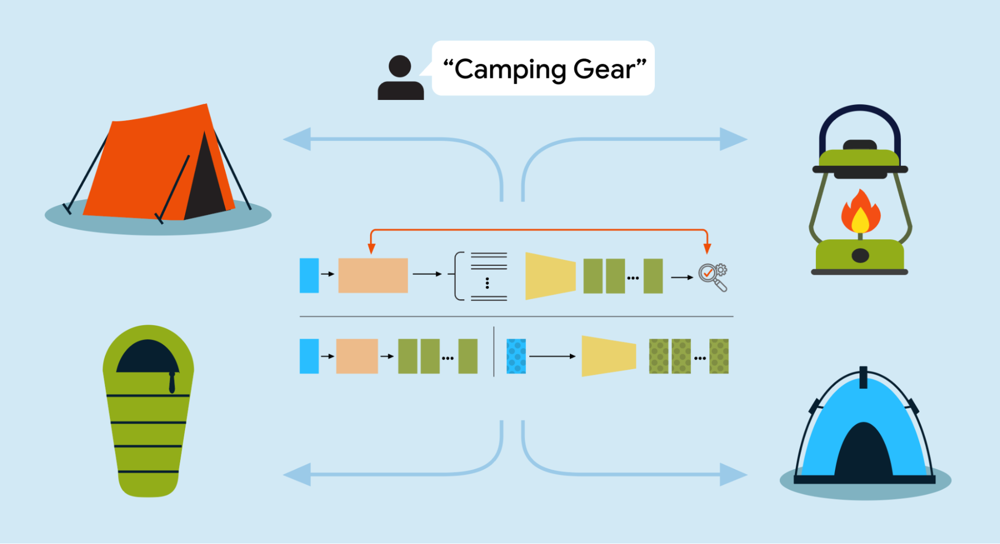
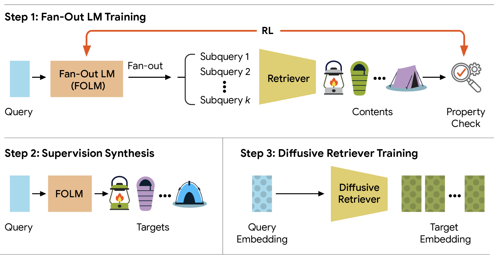
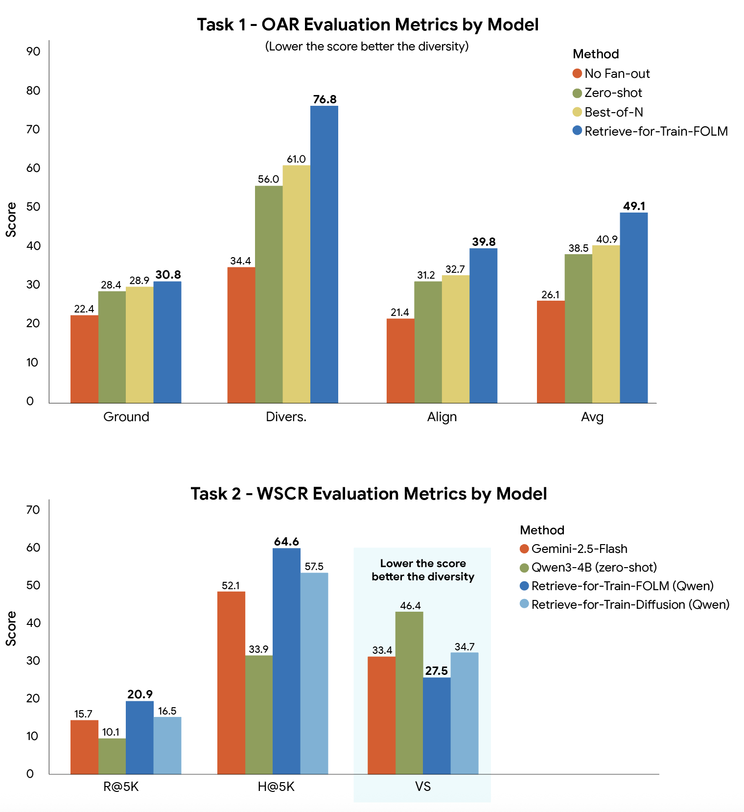

现代搜索和推荐要给出的不是单一最佳匹配，而是一组互相补充的结果。用户在搜索框里敲下「露营装备」，期待的是帐篷、睡袋、便携炉和头灯这样成套的清单，而不是十顶大同小异的四人帐篷。系统靠查询扇出（query fan-out）把一句宽泛的提问拆成若干相关子查询，去覆盖潜在的兴趣方向。
但让大模型动态完成数据库感知的查询拆解，会吞掉巨额思考预算。零样本大模型本质上是通用的自回归文本预测器，没有针对目标语料的几何流形做过优化，要返回一组在多样性、覆盖度、互补性、一致性上都更优、同时严格落在固定数据库里的结果，就必须付出长得多的测试时计算。Retrieve-for-Train改变了这笔账的记法。
把复杂检索词组的头脑风暴交给一个现成的通用大模型，看起来省事，但只要在数据库感知的查询拆解上依赖通用模型，就会撞上两个关键问题。

1 复述坍缩：没有数据库感知优化时，零样本模型经常陷进复述坍缩。它不去探索一个主题的互补侧面，而是生成冗余的近义查询。给定「波西米亚节日风格」这样一个宽泛提示，没经过仔细提示工程的模型可能懒惰地给出「波西米亚节日时装」和「波西米亚节日服装」。这种语义打转只会产出一份同质的结果清单，完全漏掉时尚专家会想到的那些真正有用的方向，比如流苏夹克、钩织连衣裙、麂皮靴。
2 自回归延迟瓶颈：标准大模型受顺序自回归生成的根本约束。要把复杂查询拆成互补侧面，现代模型通常需要可观的思考预算，先产出数百个中间思维链（CoT）推理token（也就是模型在回答复杂问题前生成的中间步骤或内部处理单元），规划好扩展方向，再输出真正的检索词。这种深思熟虑对对话式AI可以接受，对集合型检索却是严重的结构性瓶颈。系统要同时头脑风暴一大批子查询时，持续处理上下文和生成超长推理token的开销叠加起来，增长得很差。即便有先进的服务优化，逐token的架构也会形成一道延迟地板，与生产环境搜索框要求的亚秒级响应根本冲突。
在ICML 2026论文《Efficient, Property-Aligned Fan-Out Retrieval via RL-Compiled Diffusion》中，Google Research用一套「奖励到数据」的编译框架来解决这个拆解瓶颈。它不让模型在推理时花掉大笔思考预算，而是用离线强化学习找出与奖励对齐的扇出结果，把它们编译成监督数据；再把这些被优化过的探索行为蒸馏进一个轻量扩散检索器，从而在推理时实现单次前向的查询扇出。集合级属性由数学形式定义，不再需要测试时的思考token开销。
这套框架把AI的训练当作离线练习课，而不是让它在用户等待时临场应考。它不让AI每次有人输入查询都慢慢摸索什么才是好的搜索、顺带烧掉一大笔处理预算，而是离线跑一次强化学习训练程序。
这个程序用一套严格的奖励系统，把「结果要多样、要真的在库」这类抽象目标翻成一份精确的分步说明书。说明书建好之后，AI在真实搜索中可以直接照做，没有额外延迟。整条流水线分成三个步骤：
● 扇出语言模型训练：用强化学习训练一个扇出语言模型输出属性对齐的子查询，由集合级属性检查奖励打分。打分对象是整组结果，而不是逐条孤立评分。
● 监督数据合成：冻结后的扇出语言模型完全离线地合成（查询 → 目标集合）配对数据，供监督学习使用，不需要任何人工标注。
● 扩散检索器训练：一个紧凑的53.9M参数扩散模型学会在一次非自回归的前向过程中，把查询嵌入直接映射成完整的目标嵌入集合，正式绕开基于文本的CoT推理token。

框架的成败完全取决于怎么定义「好的」搜索行为。传统监督训练通过learning to rank评估逐点相关性，把每个被检索到的条目单独打分。而一份真正专家级的结果清单，是由不可分解的集合级属性定义的：单个条目的多样性或互补性根本无从度量，这些属性只有在评估整个结果集合时才在数学上存在。
Retrieve-for-Train不靠含糊的自然语言指令来约束这些扇出属性，而是用严格的数学复合奖励，通过强化学习微调4B开源语言模型（Gemma3-4B与Qwen3-4B）。在开放式抽象检索任务里，这个复合奖励是三个相互竞争的支柱的加权平衡：
● 接地性：惩罚到数据库流形的距离，确保每一个生成的子查询都对应数据库中真实、可检索的条目。
● 多样性：在全部子查询集合上用Vendi Score度量，迫使模型探索宽广的语义覆盖面。
● 对齐：把候选子查询锚定到原始宽泛提示上，防止语义漂移。
训练过程中，团队用组相对策略优化（GRPO）配合软性的近端策略优化（PPO），让扇出语言模型直面这些几何现实。
这三项奖励的组合之所以关键，是因为它们互为反锚点。如果只优化接地性，模型会奖励黑客：生成退化的、毫无意义的字符串，只因为它们碰巧在数学上映射到数据库里的某个坐标。加上对齐来修复这些胡言乱语，策略又会作弊，塌缩成对用户提示的重复复述。
引入Vendi Score作为反锚点后，这些捷径解被有效封死。策略要想达到高奖励状态，只能落进嵌入空间里那个平衡区域，在那里它必须找到既真实有效、严格接地，又在语义上与原始意图不同的变体。
为评估Retrieve-for-Train，团队组合使用了冻结的、面向数据集的多模态嵌入骨干，以及为查询扩展优化过的开源语言模型，并在两种不同的集合型检索场景下评测：
● 开放式抽象检索：不存在唯一标准答案，质量完全由集合级属性衡量，包括多样性、查询对齐和数据库接地性。
● 弱监督组合式检索：查询配有一个弱参考集合，它只是该查询意图的一种可能实现。
多模态嵌入骨干方面，实验覆盖两个领域：一个用于文生图实验的大规模时尚数据集，由用户挑选的整套穿搭构成，用基于CLIP的检索器评测；以及一个用于文生音乐评测的专有工业数据集，内容是专家生成的音乐歌单，用MuLan评测。
语言模型方面，查询扇出由4B开源模型驱动，具体是Gemma3-4B和Qwen3-4B；它们被要求对每一条主搜索提示都精确生成10个子查询。这些扇出模型的强化学习训练通过Soft-GRPO实现，也就是带软性PPO正则的组相对策略优化。
在两种检索任务上，Retrieve-for-Train都超过了传统单查询检索、零样本扩展，甚至超过了经过大量优化的Best-of-N基线。
定性来看，零样本基线倾向于生成近乎同义的复述（例如bohemian festival style对bohemian festival fashion），带来冗余结果。Retrieve-for-Train生成的子查询高度多样、彼此区分（例如分叉到「靴子」或「蕾丝」），同时又严格落在数据库流形之内。
直接部署经过强化学习调优的语言模型能拿到出色的检索质量，但它继承了标准自回归的延迟约束，并且对计算思考预算的要求很高。
把学到的行为蒸馏进53.9M参数的Retrieve-for-Train扩散模型后，延迟瓶颈被成功打破。扩散模型在连续嵌入空间里用单次非自回归的并行前向同时生成全部目标方向，相对自回归方案实现了12到20倍的提速。
在规模化场景下，自回归扇出在大上下文批次中的延迟线性膨胀到接近50秒，而Retrieve-for-Train-Diffusion保持在亚秒到几秒之间，用一小部分算力代价交付生产可用的专家级搜索。

在奖励优化过程中，团队发现了关于搜索扇出语言模型训练的一件根本性事实：没有多样性项时，模型会迅速塌缩到生成退化的、毫无意义的字符串（比如line ending line ending），去从数学上利用数据库的向量坐标漏洞。注入几何多样性度量（Vendi Score）充当了至关重要的反锚点，迫使模型进入嵌入空间里的稳定区域，在那里它只有表现得像真正的搜索专家，才能最大化奖励。
强化学习如果被当作一次性的「目标转换器」，而不是在线推理引擎来使用，可以非常有效。把奖励驱动的行为探索这类重计算从最终部署的模型中解耦出去，就能绕过在线大模型部署典型的高推理延迟和高计算开销。
把这种复杂的集合级行为蒸馏进一个轻量扩散先验，让生产检索系统能有效地优化多样性、对齐这类高阶属性。对标注数据稀缺或昂贵的专门领域与多模态领域来说，Retrieve-for-Train提供了一条可扩展、数据高效的集合检索流水线。
参考：https://research.google/blog/bypassing-inference-bottlenecks-accelerating-complex-ai-search-with-retrieve-for-train/